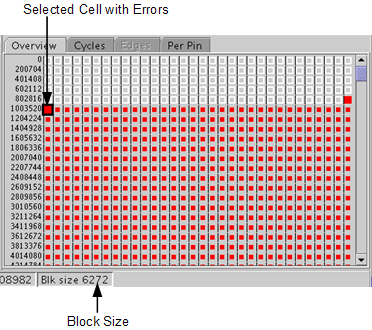

Overview tab
The overview tab gives you a pass/fail result per cycle block. These results are recorded in the Overview Error Map.
When the test is started from the Error Map Tool, the Error Map Tool will set the overview block size automatically so that the Overview Error Map covers all test cycles. The overview block size is shown on the status bar.
In our example (see the figure below) one cell represents a block of a size of 6272 cycles.
Errors are displayed in the Error Map Tool as red colored cells, as shown in the figure below.

In the figure above the first 2 cells are in normal size, all the others are shrunk. The normal size cells represent the area of the detailed Error Map. If you double-click an expanded cell, the Cycles tab, which gives you a pass/fail result per cycle, will be activated.
If you want to analyze the results of a shrunk cell, select the cell and perform the test again. When the test is finished, the selected cell is in normal size, and you can double-click it to open the Cycles tab which gives you a pass/fail result per cycle.
Functional changes
- Introduced before SmarTest 6.3.2